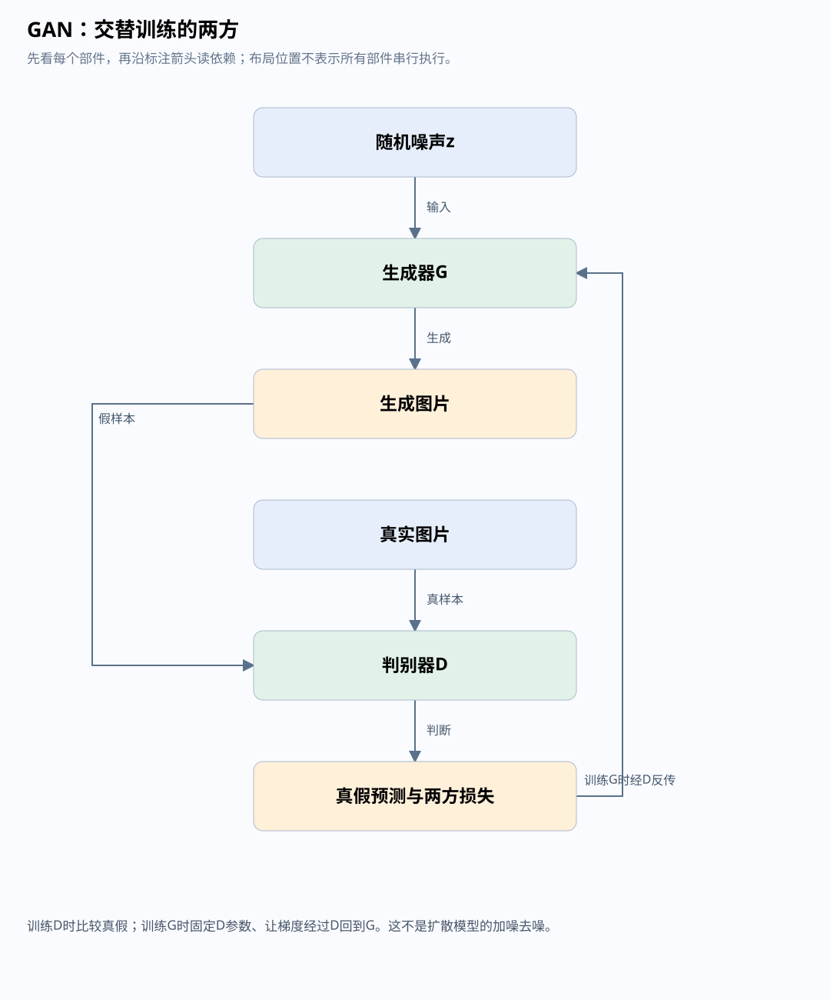

扩展专题 · 视觉结构与生成模型先读第9课理解训练闭环；本专题不是文本LLM的先修门槛。
回主线课程 第13章 · 卷积、生成与鲁棒性
本章开篇生活情境与衔接为编辑教学改写，借鉴原视频从经历引出概念的讲解方法，不是作者原话；原视频线索与论文见下方对应段落。
先把缩写换成能理解的动作
| 新词 | 输入 → 输出 | 作用与限制 |
|---|
| 卷积核 | 局部像素窗口→特征响应 | 同一组权重在不同位置复用 |
| GAN | 噪声与真样本→生成器和判别器交替更新 | 生成器造样本，判别器区分真伪 |
| 扩散模型 | 训练时加噪数据→学习反向去噪 | 生成从噪声采样，不是倒放特定历史图像 |
| FGSM / PGD | 输入与损失梯度→限定范围的扰动 | 一步符号更新 / 多步更新并投影回允许范围 |
四个视觉问题，四种不同机制
| 任务 | 输入到输出 | 核心计算 | 不要混淆 |
|---|
| 看图：CNN | 像素→特征→类别 | 局部窗口与参数共享 | 局部结构不保证不会学背景捷径 |
| 造图：GAN | 噪声→生成图 | 生成器与判别器交替优化 | 两个损失目标不同 |
| 造图：扩散 | 训练加噪；生成逐步去噪 | 学习相应噪声条件下的反向过程 | 不是把唯一一张旧图倒放还原 |
| 抗干扰 | 原图＋限定扰动→判断 | FGSM一步；PGD多步并投影回范围 | 鲁棒性要说明扰动预算与攻击条件 |
先分清问题，再深入先选一个问题学，不需要一口气背四类算法。下面保留各自的独立算例、来源与边界。
13.1 带着问题进入模型
这是LLM主线旁的一条视觉支线。看图、生成图像与抵抗扰动各有自己的结构和目标，借它们理解表示、学习信号与可靠性的区别。
先沿箭头看懂：GAN：交替训练的两方

训练D时比较真假；训练G时固定D参数、让梯度经过D回到G。这不是扩散模型的加噪去噪。13.2 卷积、局部特征与捷径学习
卷积核先做局部计算，再由后续层组合信息。下面的小窗口是结构设计，草地捷径是训练后可能形成的错误依赖；两者有关联，却不能直接画等号。
二维卷积在不同位置复用相同卷积核，从局部窗口提取特征。它的参数共享与局部连接有利于处理图像，但模型也可能依赖背景、水印等与标签偶然相关的特征。
对照数字，逐步核验
二维卷积在不同位置复用相同卷积核，从局部窗口提取特征。它的参数共享与局部连接有利于处理图像，但模型也可能依赖背景、水印等与标签偶然相关的特征。
识别捷径需要改变非目标因素后重新测试：若换背景就失效，就应怀疑模型没有学到期待的对象特征。局部感受野本身并不等于错误或捷径。
原视频还按卷积→特征图→Max Pooling→更深层→分类介绍流程。感受野随着结构逐渐扩大，所以“从局部计算”不等于“永远看不到整体”。池化也不是所有现代CNN都必须采用的唯一降采样方式。
换你试一次：先猜，再算
输入一行[1,2,3,4]，核[1,−1]，不填充、步长1，按深度学习常用互相关计算输出。
参考答案与计算结果
三个窗口给出[−1,−1,−1]。它检测相邻变化，而不是直接识别物体。
这个类比帮到哪里，停在哪里
不能从“模型用局部窗口”推出人的记忆一定不完整；二者只是比喻。
关联视频 · 本文为教学改写，非逐字转录。
13.3 GAN：两个模型、两个目标
一边负责造，一边负责辨别，双方都在更新。下面先明确各自想降低什么损失，再看为什么生成一张很像的图，还不能证明整个数据分布都学好了。
生成器把噪声变成样本；判别器区分真实样本与生成样本。训练时交替更新，生成器希望让判别器把自己的输出看成真，判别器希望分清来源。
对照数字，逐步核验
生成器把噪声变成样本；判别器区分真实样本与生成样本。训练时交替更新，生成器希望让判别器把自己的输出看成真，判别器希望分清来源。
这不是两个人争论观点是否正确。目标相互依赖，训练可能不稳定，也可能出现生成器只输出少数模式的mode collapse。
原视频不只讲两个网络，还讲了原始minimax目标的梯度饱和、生成器常用的non-saturating损失，以及一个简化二维分布实验。固定生成器时，理想判别器为D*(x)=p_data(x)/(p_data(x)+p_g(x))；若两分布一致，在有密度处它为1/2。原始minimax目标达到−log4，JS散度为0；这不是说判别器突然变笨。简化实验不等于标准神经GAN训练复现。
换你试一次：先猜，再算
真实数据有红、蓝、绿三种模式，生成器只会输出逼真的红色。为什么“单张图很真”仍不代表模型学好了数据分布？
参考答案与计算结果
它缺少蓝绿模式，可能模式坍塌。样本质量与分布覆盖是不同评价维度。
这个类比帮到哪里，停在哪里
现代语言模型训练不普遍等同于GAN；奖励模型也不能直接当GAN判别器。
关联视频 · 本文为教学改写，非逐字转录。
13.4 扩散模型：加噪过程与学习的反向过程
先看加噪时发生什么，再看训练如何让模型学会相应的去噪目标。生成从新噪声起步，走的是学习到的反向采样过程，不是找回唯一一张被打散的旧照片。
正向过程按预设调度逐步加入噪声；训练网络从带噪输入预测噪声或相关目标。采样时从噪声出发，按学习到的反向过程逐步形成数据。
对照数字，逐步核验
正向过程按预设调度逐步加入噪声；训练网络从带噪输入预测噪声或相关目标。采样时从噪声出发，按学习到的反向过程逐步形成数据。
反向采样不是恢复某张历史图片的录像倒放。给定文本和随机种子等条件，生成的是与训练分布及条件相容的样本。潜空间扩散还引入编码器和解码器。
原视频还解释：常见噪声预测训练把人工加入的噪声作为已知监督目标；从score matching角度，可联系到带噪分布的方向场。潜空间扩散用VAE编码器压缩表示，文本编码器与cross-attention提供条件，再由VAE解码器回到像素。潜表示不是简单缩小的缩略图。
换你试一次：先猜，再算
x₀=2、ᾱ=0.25、噪声ε=1，用xₜ=√ᾱx₀+√(1−ᾱ)ε计算xₜ。
参考答案与计算结果
得到1+√0.75≈1.866。给定xₜ并不自动知道唯一的x₀，因为噪声与原始样本都有不确定性。
这个类比帮到哪里，停在哪里
DDPM不是所有现代扩散模型的唯一参数化，不能用这一式概括全部变体。
关联视频 · 本文为教学改写，非逐字转录。
13.5 FGSM、PGD与对抗鲁棒性
现在不换猫，只在允许范围里改动输入。下面沿着让损失增大的方向找扰动：一步怎么走，多步怎么限制范围。鲁棒性有没有提高，也得在明确的攻击条件下比较。
FGSM沿输入损失梯度的符号方向增加有限扰动，使模型在允许范围内更容易犯错。PGD多步更新并投影回约束集合，近似寻找较坏输入。
对照数字，逐步核验
FGSM沿输入损失梯度的符号方向增加有限扰动，使模型在允许范围内更容易犯错。PGD多步更新并投影回约束集合，近似寻找较坏输入。
对抗训练在外层更新模型参数，在内层寻找有挑战的输入扰动。要写清威胁模型：攻击能力、扰动范数、预算和可见信息；一个预算下稳健不代表所有攻击下安全。
换你试一次：先猜，再算
输入x=[0.5,0.5]，梯度符号[+1,−1]，ε=0.1。FGSM扰动后是什么？L∞扰动幅度是多少？
参考答案与计算结果
x′=[0.6,0.4]，L∞距离0.1。若输入要求在[0,1]，还需裁剪到有效范围。
这个类比帮到哪里，停在哪里
输入空间的小扰动与人生伤害不在同一个度量空间；不能当成心理治疗模型。
关联视频 · 本文为教学改写，非逐字转录。
动手看看：只改一个条件，会发生什么？
让小卷积核在输入上移动，看每个窗口算出了什么。先把局部计算弄清楚，再回头思考：这些局部证据被拿来判断类别时，会不会恰好学到了背景？
想亲手复现，就运行这段小实验
本例是编辑编写的教学计算，不是作者实验的代码复刻。先把 common.py 与本章脚本下载到同一个目录，再执行 python3 13_generation_robustness.py。只使用Python标准库。
import math
for pdata, pg in [(.5,.5),(.8,.2),(.2,.8)]:
print('ideal GAN discriminator:',pdata/(pdata+pg))
x0=2.; abar=.25; noise=1.
xt=math.sqrt(abar)*x0+math.sqrt(1-abar)*noise
print('diffusion noisy sample:',round(xt,6))
x=[.5,.5]; signs=[1,-1]; eps=.1
attacked=[min(1.,max(0.,v+eps*s)) for v,s in zip(x,signs)]
print('FGSM example:',attacked)
实际运行输出
ideal GAN discriminator: 0.5
ideal GAN discriminator: 0.8
ideal GAN discriminator: 0.2
diffusion noisy sample: 1.866025
FGSM example: [0.6, 0.4]
检查这次操作，你真的看懂了吗？
窗口移动了，核里面的权重也跟着换吗？
答案与理由
不换。相同核权重复用于不同局部窗口，输出变化来自覆盖的像素不同。